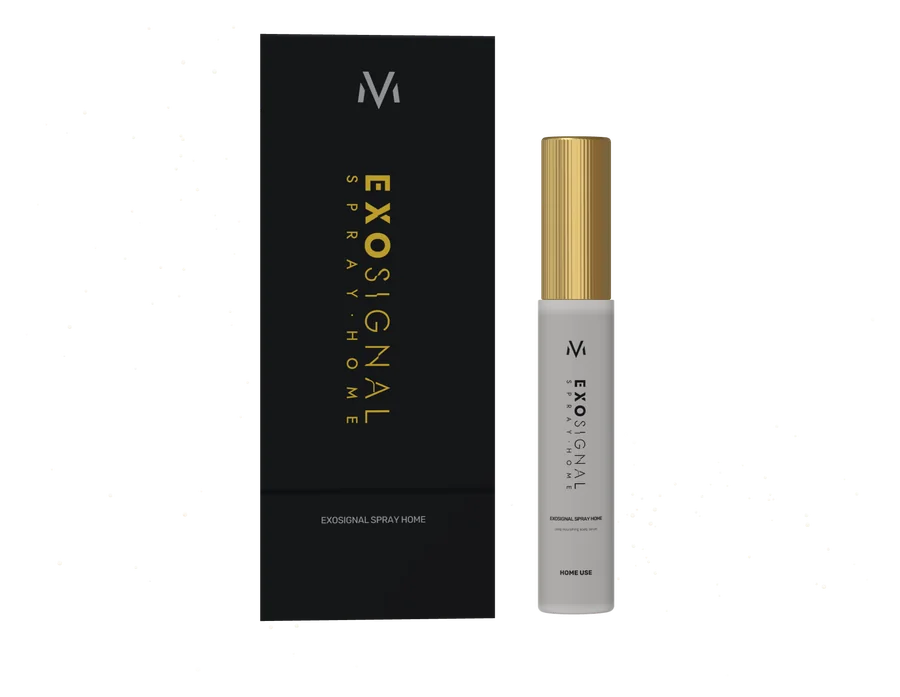
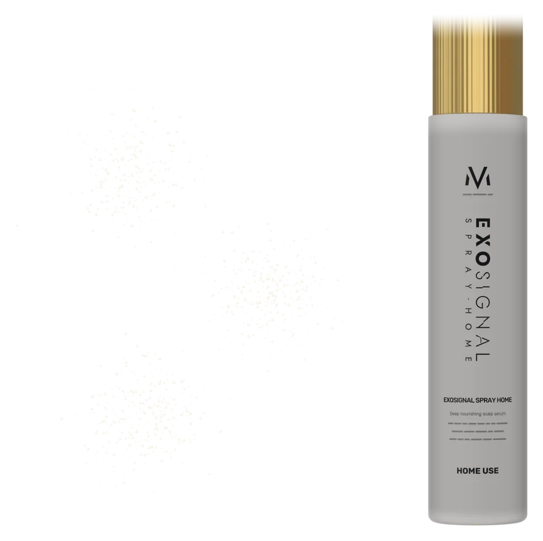
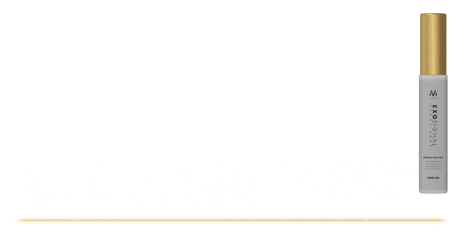

HAIRטיפוח ביתי
טיפוח ביתי · קרקפת
EXOSIGNAL SPRAY
תמיכה בקרקפת בין הביקורים.

ספריי יומיומי ללא צורך בשטיפה, המחבר בין טיפולי EXOSIGNAL HAIR בקליניקה לטיפול הביתי – מותז ישירות על הקרקפת.
- לשימוש ביתי
- 15 מ״ל
- ללא שטיפה
- ישירות על הקרקפת
למה?
הימים שבין הטיפולים חשובים.
EXOSIGNAL HAIR הוא הטיפול בקליניקה. דלילות שיער, שיער שביר וחוסר איזון בקרקפת דורשים תמיכה בימים שבין הטיפולים.
אינדיקציות
- מראה שיער דליל
- שיער דק ושביר
- קרקפת הזקוקה לאיזון
- לאחר השתלת שיער
מה בפנים
התזה אחת. שלוש משימות.

תומך בסביבה תקינה ומאוזנת של הקרקפת, מטפח את השיער ומסייע בשמירה על התנאים הדרושים למחזור צמיחה תקין – נספג במהירות, ללא צורך בשטיפה.
רכיבים פעילים
- סביבת קרקפת מאוזנת
- מטפח את השיער
- מחזור צמיחה תקין
- נספג במהירות
הפורמולה המלאה
- תומך בסביבה תקינה ומאוזנת של הקרקפת
- מטפח את השיער
- תומך בתנאים הדרושים למחזור צמיחה תקין
- נספג במהירות, ללא צורך בשטיפה
הרגישו
קליל על הקרקפת. ללא שטיפה.

מסייע להקל על יובש ותחושת אי־נוחות; תומך במראה שיער מלא, חזק וחיוני יותר, במריחה נוחה ואחידה באזורים שבהם ניכרת דלילות.
- איזון הקרקפת
- נוחות
- מראה שיער חזק יותר
- טיפוח ממוקד
פרוטוקול
חלוקה. התזה. עיסוי.
לחלק את השיער כדי לחשוף את הקרקפת, להתיז ישירות עליה ולעסות בעדינות – ללא צורך בשטיפה. מדי יום, בין טיפולי EXOSIGNAL HAIR ולאחריהם.
משתלב עם EXOSIGNAL HAIR
- 01
חלוקה
- 02
התזה
- 03
עיסוי
הצעה
תמיכה רציפה בקרקפת ובזקיקים בין הטיפולים
זמין דרך הקליניקות השותפות של מיטודרם. התייעצו בקליניקה כיצד EXOSIGNAL SPRAY משתלב בתוכנית הטיפול שלכם.
מצאו מומחה
מומחי MITODERM מוסמכים
פרוטוקול V-TECH, פילינג EXO-NAD ומסכת EXOCELL מבוצעים על ידי איש מקצוע.
מקצוע
עדיין אין מומחים מוסמכים בקטגוריה זו – ראו את הרשימה המלאה.
רשימת קוסמטיקאיות וקליניקות מוסמכות
אתם קוסמטיקאים?הגשת בקשה